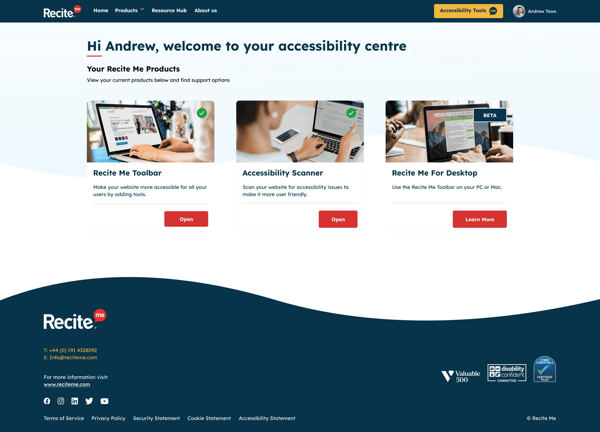
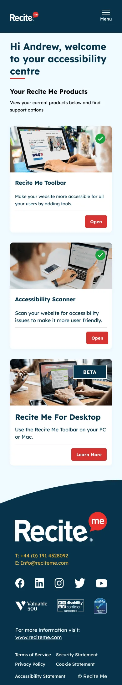
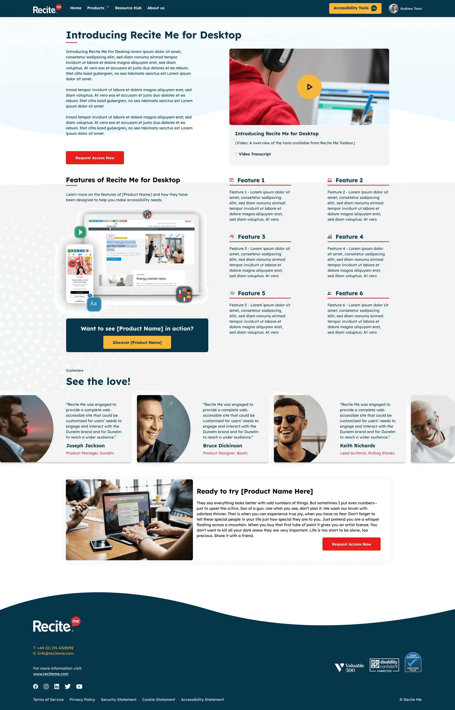
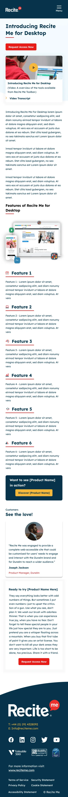
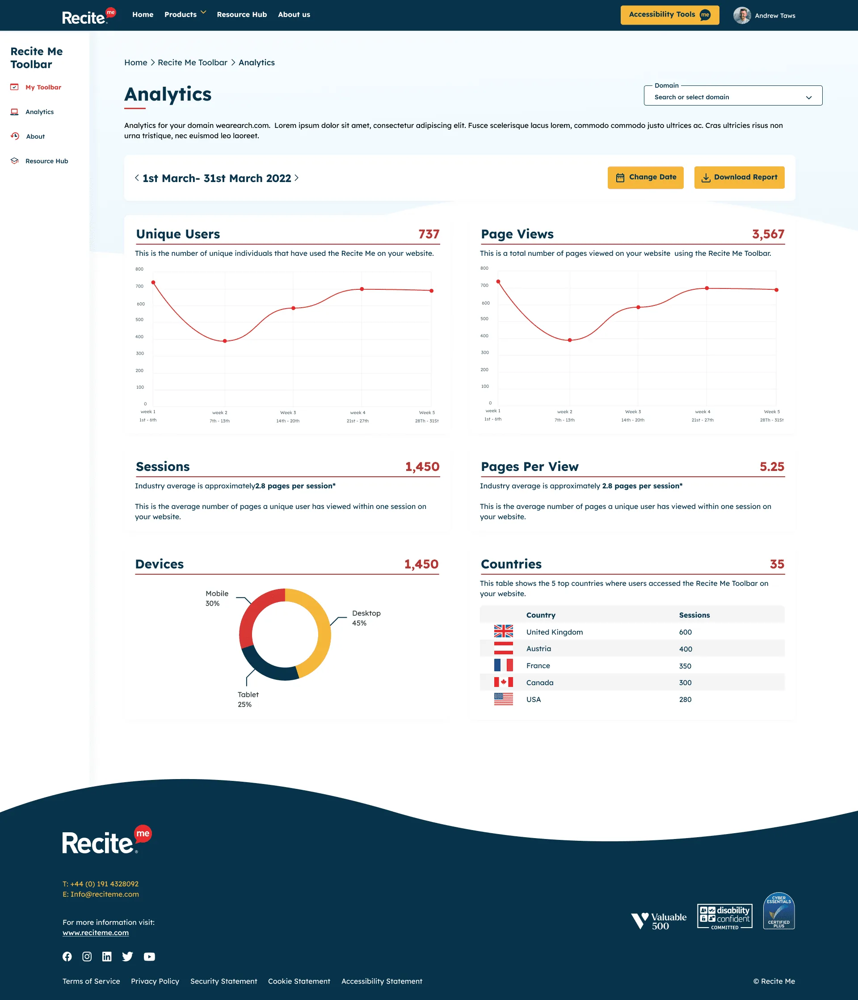
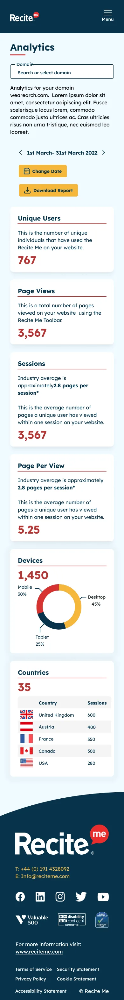

Product design · Recite Me
Recite Me Client Portal
Everything customers need, in one place: manage their accessibility products, discover new ones and see the impact through analytics.

Overview
As the Recite Me portfolio expanded, our customers needed an easier way to manage everything they had with us.
The Recite Me Client Portal brings it all together. Customers can see the products they use, discover new ones, and get to important information like analytics, all from a single, accessible dashboard that works just as well on mobile as it does on desktop.
The challenge
- Scattered information. Customers had to go to different places, or contact us, to find details about their products and usage.
- Hidden value. Without easy access to analytics, it was hard for customers to see the difference their accessibility tools were making.
- Missed opportunities. Customers weren’t always aware of other Recite Me products that could help them.
Research and insight
I regularly join client calls to hear first-hand about the issues customers face.
These conversations shaped the portal’s priorities: clarity on what they have, proof of impact, and less reliance on support for everyday questions.
Key features
Home
The home screen gives customers an instant overview of their account and products, so the most important information is never more than a glance away.
-
Home, desktop -

Home, mobile. View full screen: Home, mobile

Discovery
The Discovery page helps customers find other Recite Me products that could support their accessibility journey. It’s presented as helpful guidance rather than a hard sell.
-

Discovery, desktop. View full screen: Discovery, desktop -

Discovery, mobile. View full screen: Discovery, mobile


Analytics
Analytics show how customers’ visitors are using their Recite Me tools, giving them clear evidence of impact to share with their own stakeholders.
-

Analytics, desktop. View full screen: Analytics, desktop -

Analytics, mobile. View full screen: Analytics, mobile


Responsive and accessible
Every screen was designed mobile-first and built on the Recite Me Design System, meeting WCAG 2.2 AA so the portal is as accessible as the products it manages.